Verle le veía lo que se dice mal , porque la mirilla era muy turbia.

Por eso en ocasiones esperaba durante horas al otro lado de la puerta , en el pasillo , provista de algún camuflaje razonable ( la bolsa de la compra , el abrigo , el misal , el monedero ) , hasta escuchar sus pasos ; entonces se precipitaba al descansillo , aturullada , fingiendo una sorpresa desmedida al encontrarle , e intercambiaba con él breves disquisiciones sobre el tiempo , tema este que Antonia sacaba con tanto empeño y que exponía con tanto ardor que el buen hombre debió acabar creyendo que su vecina poseía una intensa vocación meteorológica.
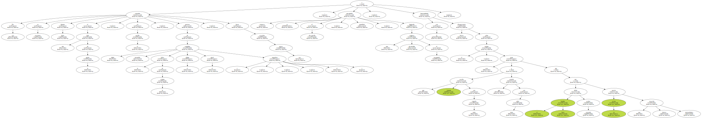- - - Tiene usted tierras ? - - preguntó Rafael un día.
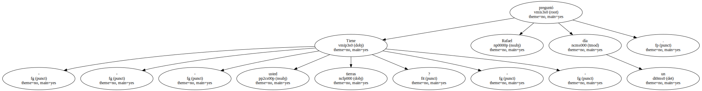- - - Yo.
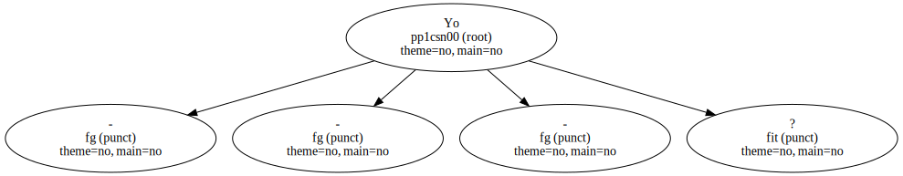No , no.
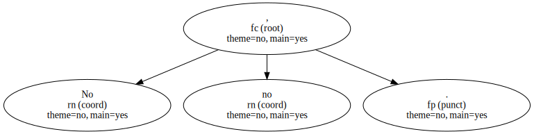Mi familia tenía , pero ahora ya no.
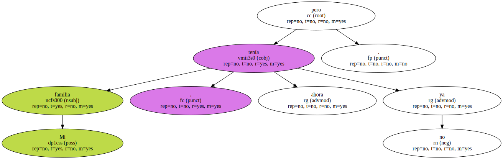- Por qué ? -.
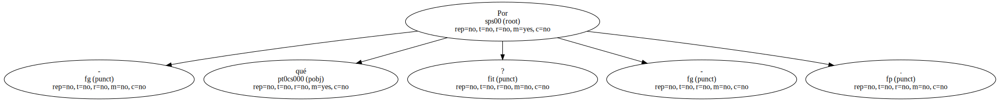- - No , por nada , disculpe usted , pero es que se preocupa tanto cuando llueve y cuando no llueve , que me creí que sería cosa de la siembra , ya me entiende.
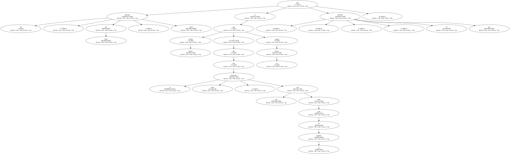El puro , este cabo de habano mordisqueado , era el trofeo de una jornada cumbre , de aquel día en que Rafael entró en su casa.
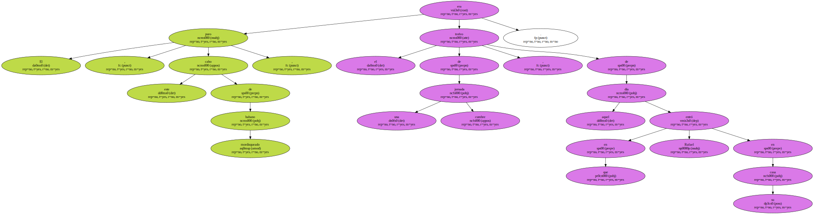Se había roto una cañería , la llave de paso parecía haberse soldado con su rosca y la cocina se inundaba por momentos.
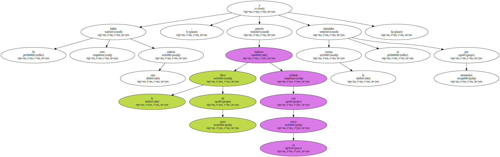La magnitud de la catástrofe exigía medidas de emergencia y Antonia llamó al vecino en su socorro.
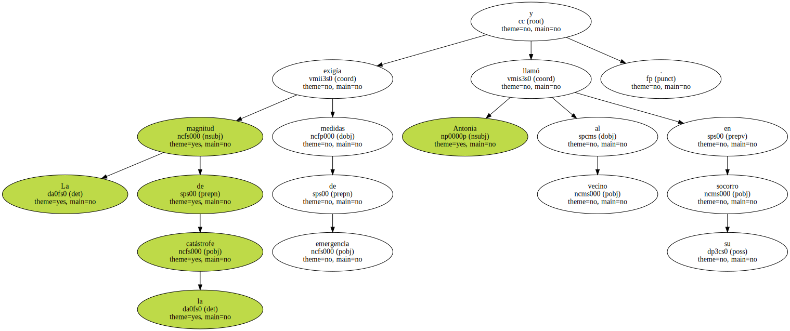Rafael acudió al instante con una galanura que hubiera bastado para derretir corazones más curtidos que el de ella , y bajo su fuerte mano ( ay ) la llave de paso cedió con docilidad de mantequilla.
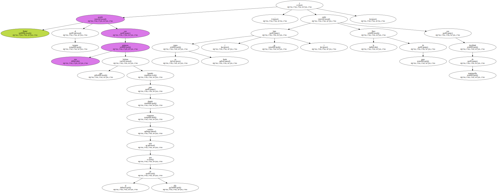- - Es que una casa necesita tanto de la mano de un hombre , si usted supiera.
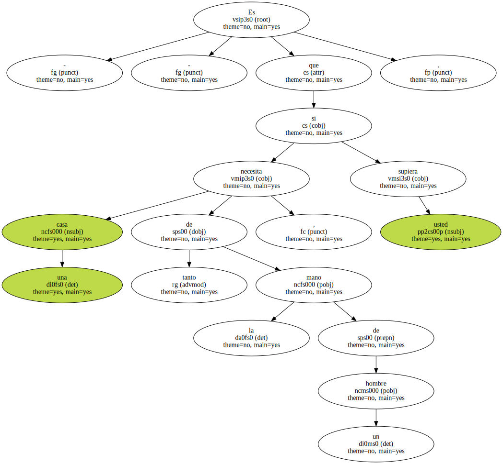- - coqueteó Antonia púdicamente.
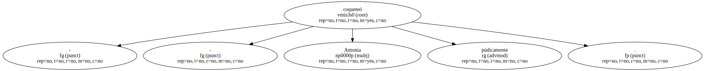- - Sí , señora.
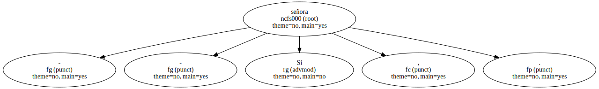Y en la casa de un hombre solo se necesita la mano de una esposa.

Dios sabía lo que hacía cuando le sacó la costilla a Adán - - contestó Rafael.
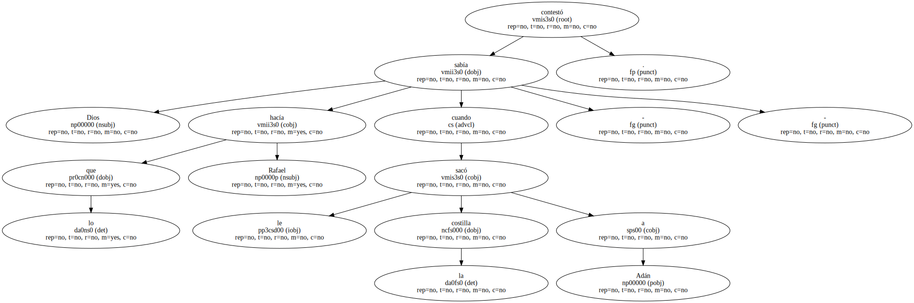Visto lo cual , Antonia le invitó a un café ; - y aunque estaba turbada por la irrupción de un varón en sus territorios de soltera , se admiró de lo fácil que había sido todo y lamentó que el maldito grifo no hubiera reventado meses antes.
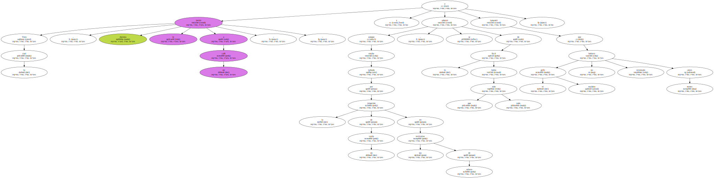De aquella breve pero intensa experiencia Antonia extrajo conclusiones importantes , a saber : Que a Rafael le gustaba fumar puros.
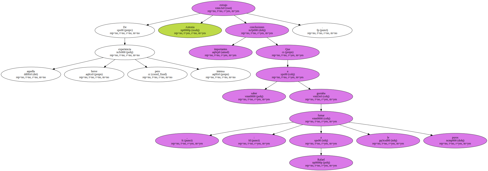Que era aún más guapo visto de frente que en sus fugitivos escorzos de escalera.
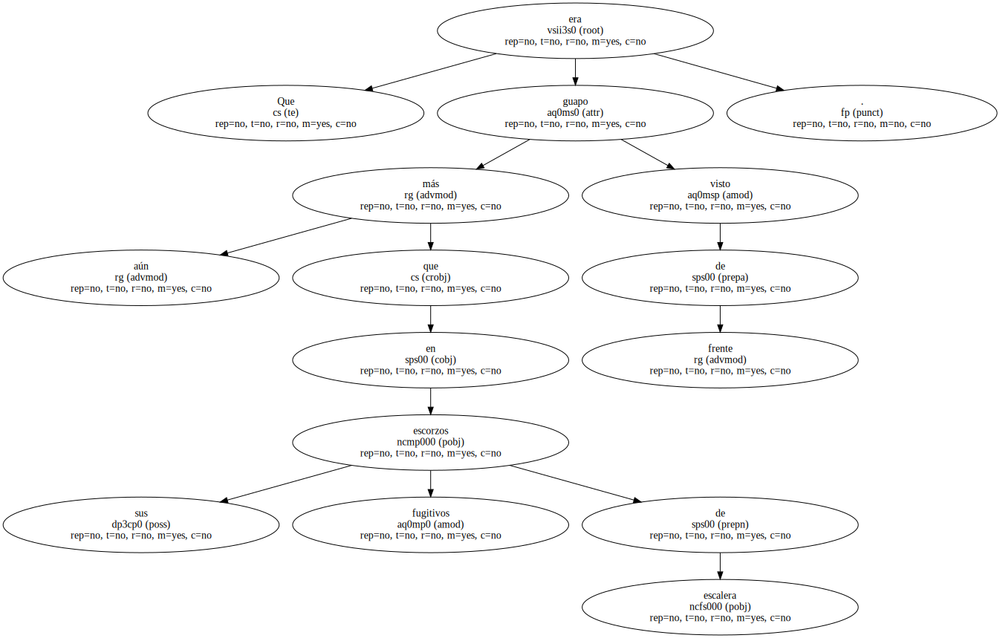